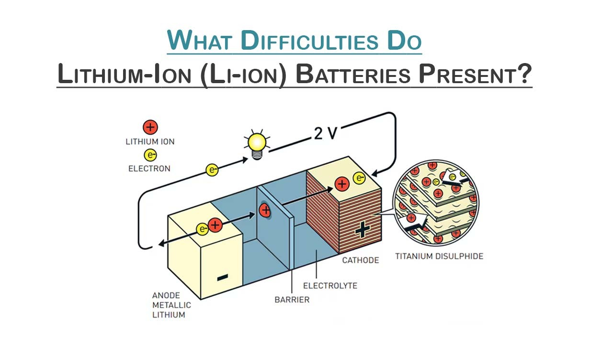

Na-ion (sodium-ion) batteries are one of the most affordable and widely available substitutes for Lithium-ion (Li-ion) batteries. Although, there is sufficient lithium in the world to meet the goals for electrification, there is an urgent need for an alternative due to tightening supply chain constraints and rising demand. A Na-ion battery cell should cost between USD 40 and 80 cents per kWh, while a Li-ion battery cell should cost an average of USD120 per kWh. Na-ion batteries have a longer cycle life, faster charging times, and a safer operating temperature range. They are heavier and bulkier due to their lower energy density. However, it is still sufficient for city-range EVs at 160 Wh/kg (which should increase), and Chinese manufacturers have already revealed Na-ion compact EVs with a 250 km range. Production capacity is expected to increase from 42 GWh/year in 2023 to 186 GWh/year by 2030, which is sufficient to power the 4.6 million EVs produced annually. Furthermore, size is irrelevant for home storage and stationary grid. This is a tale about Na-ion, but it's also about how crucial it is for the world to innovate energy solutions in place of conventional ones, guaranteeing a diverse supply chain and reasonable costs. The global energy transition towards net-zero will necessitate adjustments in energy production and consumption, with a focus on renewables. The eventual direct and indirect electrification of energy end-use sectors (buildings, transportation, and industry) will be one of these changes.
Unlocking Success: The Key to a Seamless Transition is Energy Storage
One cannot stress how crucial storage is to a smooth transition. According to IRENA's 1.5°C Scenario, battery storage will be necessary to provide the power system with a great deal of flexibility. By 2030, it will reach nearly 360 GW, and by 2050, 4,100 GW. Beyond the power industry, however, battery storage will be essential to the decarbonization of end-use industries. Take electric vehicles, which are expected to make up 90% of all road transportation by 2050.

What Difficulties Do Lithium-Ion (Li-ion) Batteries Present?
Since lithium-ion (Li-ion) batteries have such a high energy density and are so versatile, they have been at the forefront of modern energy storage solutions. However, as demand for Li-ion batteries has grown, there have been concerns about supply chain bottlenecks, geopolitical issues, sustainability, and resource availability. To be clear, the world has an ample supply of materials, including lithium, to support the energy transition. However, the primary cause for concern stems from battery supply chains' inability to keep up with the demand for electric vehicles, which is growing at an exponential rate, and the resulting spike in lithium carbonate prices.These worries highlight the necessity of looking into alternatives and methods for optimizing the desperately needed storage solutions in a sustainable manner. Once more, new developments in battery storage technologies, specifically a variety of emerging chemistries, may serve as the catalyst to accelerate the transition.
What's the Motivation for Transitioning to Na-ion Batteries?
Na-ion batteries are basically the same as Li-ion batteries, but they use sodium compounds instead of lithium because sodium is approximately a thousand times more abundant than lithium. This means that by expanding the range of viable battery chemistries, Na-ion batteries have the potential to reduce the short-term supply issues that plague their lithium-based counterparts and the associated cost volatility.
The primary sodium precursor used in the production of sodium-ion batteries is the soda ash, which is far more sustainable to extract and refine than lithium. This makes it less expensive and less vulnerable to fluctuations in price and resource availability. About 47 billion tons of soda ash resources and over 23 billion tons of soda ash reserves have been identified in the US alone. By using the Solvay process, soda ash can also be artificially made from salt and limestone, as it is currently done. This means that it could potentially be produced almost anywhere in the world.
Applications of Na-ion Batteries
Sodium-ion batteries can be used in a variety of applications. Static storage is among the most promising. Cheap energy storage is desperately needed, both behind-the-meter (at homes or businesses) and at the utility scale as a result of the rapidly increasing integration of variable renewable energy sources. Given that size and weight are not major issues for stationary applications and that Na-ion batteries have low cost, long life, safety, and performance characteristics, they may be able to compete with Li-ion batteries. These batteries could also be utilized in electric vehicles. especially considering that short-range EVs currently have an energy density of 160 Wh/kg. In fact, with several Chinese automakers and battery producers announcing plans to produce compact electric vehicles (EVs) with 250 km of range on Na-ion batteries, this is already beginning to happen.
Conclusion
Sodium-ion batteries may be able to compete with current lead-acid lithium-ion batteries for some uses, such as Lithium-iron Phosphate (LFP) or Nickel-Manganese-Cobalt (NMC). To do this, though, a number of obstacles must be removed, such as enhancing the way they are built and the materials they are made of, setting up supply chains, obtaining economies of scale, and ultimately demonstrating that they are a practical and affordable solution.